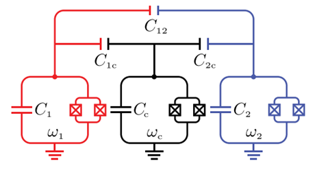

11. 比特间可调耦合¶

耦合强度
\[
g\approx \frac{g_{1c}g_{2c}}{2}(\frac{1}{\Delta _{1c}}+\frac{1}{\Delta _{2c}}-\frac{1}{\Sigma _{1c}}-\frac{1}{\Sigma _{2c}})+g_{12}
\tag{11.1}
\]
其中 \(\Delta _{ic}=\omega_i-\omega_c, \quad \Sigma _{ic}=\omega_i+\omega_c\) ， \(g_{ic}\) 的计算方式如式 \((10.1)\) 一致
\[
g_{ic}\approx C_{ic}\frac{\sqrt{\omega_i\omega_c}}{2\sqrt{(C_i+C_{ic})(C_c+C_{ic})}}
\]
\[
g_{12}=\frac{\sqrt{\omega _1\omega _2}}{2}(\frac{C_{12}}{\sqrt{C_1C_2}}+\frac{C_{1c}C_{2c}}{\sqrt{C_1C_2}C_c^2})
\]